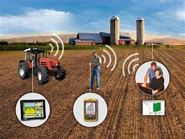

Precision Agriculture - The Future of Smart Farming

Precision agriculture (PA), also known as satellite farming or site-specific crop management (SSCM), is an advanced farming
approach that uses technology to monitor and manage agricultural operations with high precision. It helps farmers optimize
inputs such as water, fertilizers, and pesticides to improve yield while minimizing waste and environmental impact.
"Precision agriculture transforms farming into a data-driven science, ensuring every drop of water and every grain of fertilizer
is used efficiently." — Agricultural Expert
Key Technologies in Precision Agriculture
- GPS & GIS Technology: Used for mapping fields, monitoring crops, and guiding farm machinery.
- Remote Sensing: Drones and satellites collect data on soil health, moisture levels, and crop conditions.
- IoT Sensors: Soil and weather sensors provide real-time information for better decision-making.
- AI & Machine Learning: Helps predict disease outbreaks, pest infestations, and crop growth patterns.
- Automated Farm Equipment: Smart tractors and robotic harvesters enhance efficiency and reduce labor costs.
Benefits of Precision Agriculture
- Increased Crop Yield: Helps maximize productivity by applying the right resources at the right time.
- Cost Efficiency: Reduces the excessive use of fertilizers, pesticides, and water, saving money.
- Environmental Protection: Minimizes soil degradation, reduces chemical runoff, and conserves water.
- Improved Farm Management: Real-time monitoring allows farmers to make data-driven decisions.
- Climate Resilience: Helps farmers adapt to changing weather conditions with predictive analytics.
Challenges in Precision Agriculture
Despite its numerous benefits, precision agriculture faces several challenges, including:
- High Initial Costs: Advanced equipment and software can be expensive for small farmers.
- Technical Expertise: Requires training to interpret data and operate technology effectively.
- Internet Connectivity: Many rural areas lack the necessary infrastructure for IoT-based farming solutions.
- Data Privacy Concerns: Farmers worry about data security and reliance on third-party software providers.
Future of Precision Agriculture
The future of precision agriculture looks promising with advancements in artificial intelligence, blockchain for
agricultural data security, and fully automated farms. Governments and agribusinesses are investing in smart farming
solutions to ensure global food security.